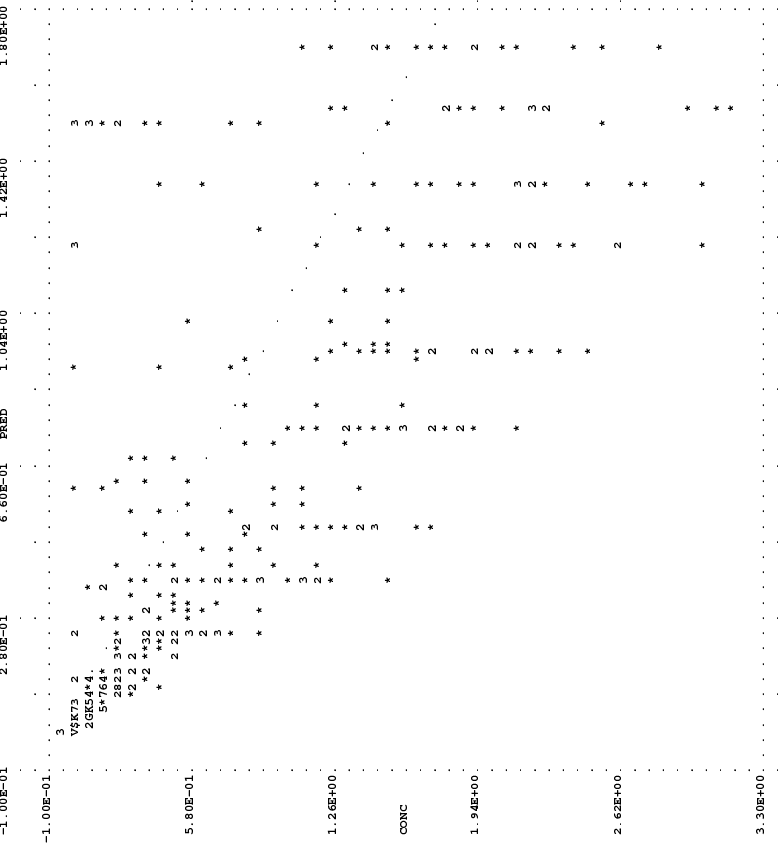
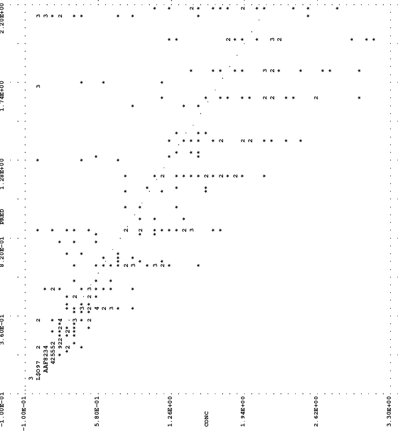

NONMEM Users Guide Part VII - Conditional Estimation Methods - Chapter figures
NONMEM Users Guide Part VII - Conditional Estimation Methods Figures
Figure 1

Figure 2
Figure 3

TOP
TABLE OF CONTENTS